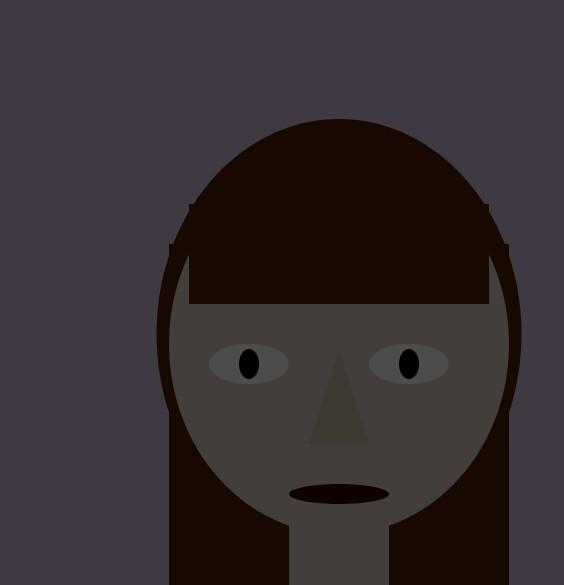

let fadeAmount = 255;
let cycleTime = 6000; // Total loop duration
function setup() {
createCanvas(600, 600);
}
function draw() {
background(208, 192, 222);
noStroke();
// Hair
fill(80, 32, 2);
rect(280, 250, 240, 350);
rect(180, 250, 300, 350);
ellipse(350, 340, 365, 430);
// Head
fill(224, 209, 199);
rect(300, 500, 100, 120);
ellipse(350, 350, 340, 380);
// Bangs
fill(80, 32, 2);
rect(200, 210, 300, 100);
arc(350, 250, 300, 200, PI, TWO_PI);
// Left eye
ellipseMode(RADIUS);
fill(255);
ellipse(260, 370, 40, 20);
ellipseMode(CENTER);
fill(0);
ellipse(260, 370, 20, 30);
// Right eye
ellipseMode(RADIUS);
fill(255);
ellipse(420, 370, 40, 20);
ellipseMode(CENTER);
fill(0);
ellipse(420, 370, 20, 30);
// Nose
fill(211, 190, 175);
triangle(350, 355, 320, 450, 380, 450);
// Mouth
fill(52, 5, 9);
ellipse(350, 500, 100, 20);
// Repeating fade
let t = millis() % cycleTime;
if (t < 3000) {
// Fade in from black
fadeAmount = map(t, 0, 3000, 255, 0);
} else {
// Fade back to black
fadeAmount = map(t, 3000, 6000, 0, 255);
}
fill(0, fadeAmount);
rect(0, 0, width, height);
}